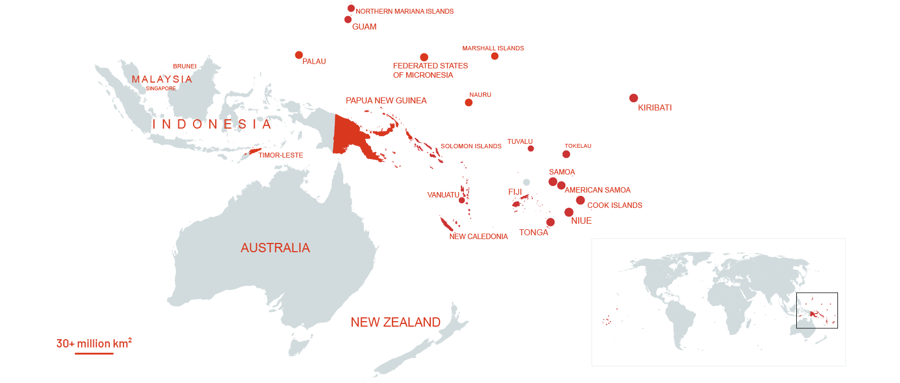
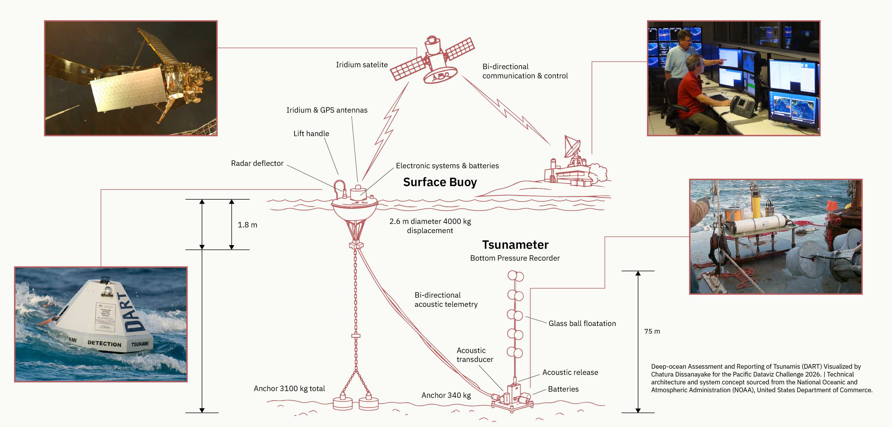
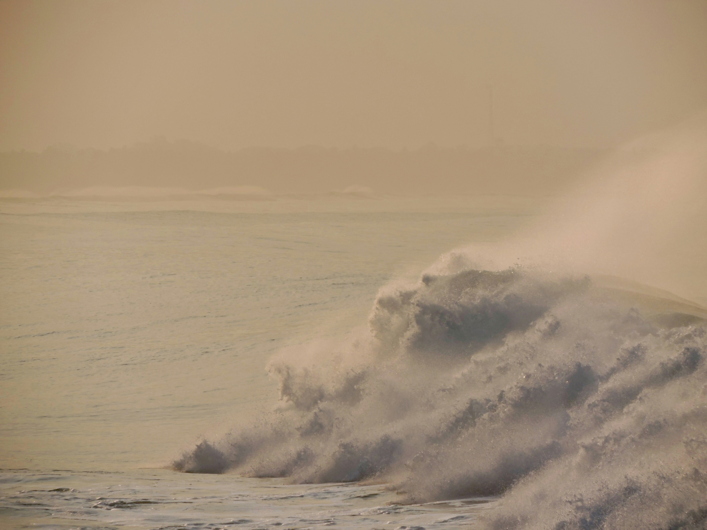

The Pacific Blind Spot

Figure 1.0: Pacific Small Island Developing States (SIDS) territory covering 30+ million km² of ocean.
It is not just that the ocean is rising. The sovereign mechanisms to measure atmospheric pressure, heat waves, droughts, and storm surges are largely broken, missing, or unfunded. Six years of baseline data reveal a chronic lack of monitoring infrastructure in the very places that need early warnings the most.

We are operating in the dark
According to the World Meteorological Organisation (WMO), Lower-Middle Income Countries (LMICs) currently meet only 6% of the required baseline for surface weather stations. For Least Developed Countries and Small Island Developing States (LDCs & SIDS) combined, surface compliance sits at just 9%, while upper-air monitoring reaches only 13%. This contrasts sharply with Upper-Middle Income Countries (UMICs), which average 39% compliance.

National Data Buoy Center, NOAA. Deep-ocean Assessment and Reporting of Tsunamis (DART) system, U.S. Department of Commerce.
While satellite imagery provides a macro view of regional cloud cover, ground-level radar and surface stations provide essential "ground truth." They detect rapid micro-changes in atmospheric pressure, temperature, and localised humidity that transform ordinary squalls into catastrophic cyclones and trigger flash droughts. Without them, early warning systems operate with massive margins of error.
| Region / Category | Current Coverage | Required Target |
|---|---|---|
| Upper-Middle Income Countries Average | 39% | 100% |
| LDCs & SIDS Upper-Air Stations | 13% | 100% |
| LDCs & SIDS Surface Stations | 9% | 100% |
| Lower-Middle Income Countries Average | 6% | 100% |
High exposure, low detection
This chart tracks the number of people directly affected by disasters each year, and the average annual economic loss disasters inflict, across Pacific Island Countries. While disasters are intensifying, local tracking hardware remains dangerously sparse across the Pacific region.
Without localised ground-truth data, forecasting relies heavily on coarse satellite estimates. This severely reduces landfall accuracy, narrowing the crucial lead time for evacuations from days to hours. When data infrastructure is neglected, communities pay for it in disaster recovery and unmanaged vulnerability.


Ground Truth: Chronic overwash and storm surge routinely swamp low-lying atolls in the Pacific, while the satellites tasked with tracking these storms remain the primary — often only — source of warning data. Photos 1–2: USGS, public domain. Photos 3–4: NASA/JAXA GPM mission, public domain.
| Year | Affected Persons |
|---|---|
| 2018 | 920 |
| 2019 | 23,286 |
| 2020 | 18 |
| 2021 | 246,802 |
| 2022 | 1,400 |
| 2023 | Data Unavailable |
Vanuatu's average annual economic loss to disasters: US$64,500,000 (2018 reference year, Pacific Data Hub SDG 11.5.2).
Chart defaults to Vanuatu; select another country above to see its figures (full country dataset in data.js).
Guess the sovereign station count
Regional averages obscure how uneven the monitoring gap is in practice. Entire island nations operate on a literal handful of fixed meteorological stations. This structural infrastructure deficit directly impedes progress toward SDG 9 (Resilient Infrastructure) and SDG 13 (Climate Action).


Kiribati operates a dense ground network across its 3.6 million km² exclusive economic zone.
Over 3.6 million km² of ocean territory is monitored by just 4 permanent fixed land stations.

Because Fiji is the primary regional forecasting hub, it operates over 20 active GBON ground stations.
Despite serving as a regional meteorological hub, Fiji operates only 8 active fixed stations.

A dense early warning sensor grid matches Tuvalu's extreme vulnerability to sea-level rise.
Tuvalu's entire 9-atoll nation relies on just 3 permanent land stations for localising.

Samoa relies primarily on external satellite feeds rather than sovereign ground observation.
With only 2 fixed stations reporting baseline data, reliance on external satellite feeds is acute.

Following recent volcanic and tsunami shocks, Tonga operates more than 10 permanent monitoring stations.
Tonga's active network remains flat at 4 stations across its four main island clusters.

There are exactly zero permanent, sovereign fixed land weather stations reporting baseline data in Nauru.
Nauru (Naoero) has zero operational sovereign fixed land stations reported in regional baselines.

As one of the world's most disaster-prone archipelagos, Vanuatu maintains over 20 surface stations.
Just 6 permanent fixed meteorological stations monitor Vanuatu's 80+ inhabited islands.

The Solomon Islands' expansive territory is monitored by a network of at least 12 fixed stations.
Severe geographical fragmentation leaves the nation operating with only 3 fixed reporting stations.
The compounding sea-level threat
Climate models project escalating sea-level anomalies across the Pacific basin. Satellite altimetry confirms ~10 cm of sea-level rise since 1993, while high-tide flooding events have surged exponentially at monitoring stations like Pago Pago.
Under the high-emissions pathway (RCP8.5), global mean sea-level rise is projected to reach +74.0 cm by 2100. For low-lying atolls where maximum elevation is under 3 meters, extreme high tides combined with cyclone-driven storm surges will render critical infrastructure permanently flood-prone without rapid adaptation.


By 2100, the worst-case high emissions scenario (RCP8.5) places low-elevation assets (such as Tuvalu's Funafuti runway corridor) below routine high-tide flood levels.
*RCPs (Representative Concentration Pathways) are standardised scenarios used by the IPCC to project future global warming based on greenhouse gas volumes.
| Year | Flood days |
|---|---|
| 2010 | 2 |
| 2011 | 4 |
| 2012 | 4 |
| 2013 | 4 |
| 2014 | 7 |
| 2015 | 2 |
No high-tide flooding day counts have been published for this station since 2015 — the record itself has gone dark, which is the point of this chart.
This station's own record stopped updating in 2015 — even long-running, historically well-instrumented sites lose funding for continued reporting.
Projected sea-level anomaly by 2100: +53.0 cm
The axis below is intentionally broken between 12 cm and 40 cm: the observed trend (left) and the three 2100 scenarios (right) sit at very different scales, so compressing the space between them keeps both legible. Click any scenario dot, or use the pathway selector above.
| Series | Value |
|---|---|
| Observed, 1993 | 0.0 cm |
| Observed, 2025 (latest) | +10.5 cm |
| 2100, RCP2.6 (Lower) | +44.0 cm |
| 2100, RCP4.5 (Typical) | +53.0 cm |
| 2100, RCP8.5 (High Emissions) | +74.0 cm |
Financing the Pacific radar grid
The United Nations created the Systematic Observations Financing Facility (SOFF) to bridge the global meteorological deficit by financing long-term surface and upper-air infrastructure, and it is the closest thing the gap documented in this story has to an answer already in motion.
The SOFF pipeline operates across three strict phases: Readiness (gap assessments), Investment (physical hardware deployment), and Compliance (ongoing operations). Of the eight Pacific countries this story tracks, three — Solomon Islands, Samoa, and Nauru — already have their Investment Phase funding approved. The rest are still in Readiness or have no funding secured at all.

A mechanism to close this gap already exists. The work left is not inventing a solution — it is moving the five countries still in or before Readiness (Fiji, Kiribati, Tuvalu, Vanuatu, Tonga) through to Investment. That is a funding and political-will problem, not a technical one.
Of the 8 Pacific countries this story tracks: 3 approved for SOFF Investment Phase funding (Solomon Islands, Samoa, Nauru)
| Phase | Countries | Count |
|---|---|---|
| Investment Phase (hardware funded) | Solomon Islands, Samoa, Nauru | 3 |
| Readiness Phase (assessment only) | Fiji, Kiribati, Tuvalu, Vanuatu | 4 |
| Unfunded gap | Tonga | 1 |

Closing the blind spot
The Pacific monitoring gap is not a permanent geographic condition; it is a solvable infrastructure deficit. As baseline temperatures rise and extreme weather events compound, the human and economic cost of operating in the dark grows exponentially.
Early warning systems are the most cost-effective line of climate defense humanity has engineered—yielding a proven tenfold return on investment—but they require hardware on the ground, telemetry in the sky, and sustained sovereign capital to maintain them.
Pacific nations are standing on the frontlines of a global crisis they did not create. Equipping them with the basic radar grid to see the storm coming is the absolute baseline of climate justice.
Methodology & Sources
This data story relies exclusively on verified open data from regional authorities, the UN Systematic Observations Financing Facility (SOFF), the World Meteorological Organisation (WMO), the Pacific Data Hub (SPC), and World Bank Climate Risk Country Profiles. Full access to raw data files and processing scripts is provided below.
Primary Documents & Registries
- Meteorological Monitoring Network (DF_METEO_MONITOR_NET) Pacific Data Hub
- Directly Affected Persons by Disasters (SDG 11.5.1) Pacific Data Hub
- Direct Disaster Economic Loss, Average Annual Loss (SDG 11.5.2) Pacific Data Hub
- Climate Risk Country Profiles & Sea Level Projections World Bank CCKP
- Historical High Tide Flooding Days (Pago Pago Station) NOAA
- SOFF Portfolio and Implementation Progress (INF 13.2, Feb 2026) UN SOFF
- WMO GBON Global Baseline Diagnostic Report (INF 6.2) World Meteorological Organisation